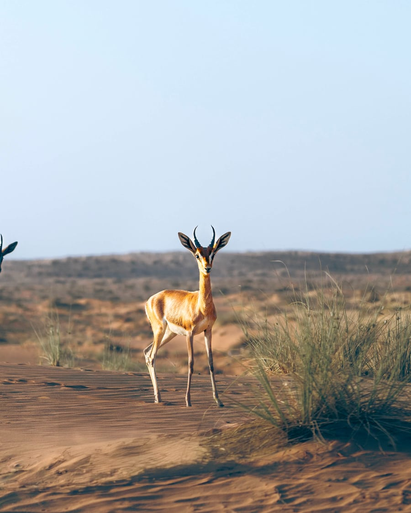
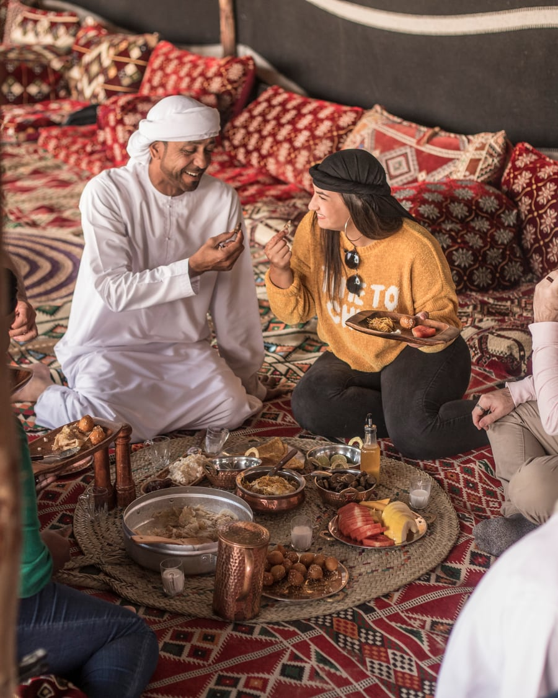

National Geographic × Hero Experiences
A proposal to create the world's definitive desert expedition
Conservation and luxury are sold as opposites.
Conservation travel asks the guest to give something up.
Luxury travel asks the landscape to give something up.
The Arabian desert deserves an expedition that refuses the trade-off.
Nat Geo brings what no operator can.
- Global credibility in exploration
- Scientific authority in ecosystems
- Unmatched storytelling power
- A mission rooted in conservation and education
This is not branding. This is co-creation of a new category standard — across the access tiers Nat Geo's travel portfolio already accommodates.
We already operate at the standard.
Hero Experiences Group operates Dubai's only ecotourism-certified desert safari, inside the UAE's first national park — the Dubai Desert Conservation Reserve. Exclusive operating access on Royal Family private property within the reserve. Camps run on solar power. Guides speak 9 languages. The Platinum Collection runs at a 1:2 staff-to-guest ratio. Dining curated by Michelin-starred Chef Claudio Filippone.
Recognised globally. Repeatedly.
Travel & hospitality
- World Travel Awards — Middle East's Leading Desert Safari Company, 8 wins between 2016 and 2024
- World Travel Awards — Leading Balloon Ride Operator (Middle East 2020–2025; World's 2020–2023)
- Layalina Editor's Choice Award — The Dubai Balloon, 2024
- Luxury Lifestyle Awards — Luxury Travel Dubai, 2025
- TripAdvisor — Certificate of Excellence 2013–2019 (Hall of Fame); Travelers' Choice 2020–2025
Sustainability & conservation
- Gulf Sustainability & CSR Awards — Winner, 2018
- International Sustainable Luxury Awards, 2023
- Dubai Sustainable Tourism · Dubai Green Tourism (Dubai DET certifications)
Most desert safaris are not desert experiences.
A camp built for crowds
Typical · Atmosphere
Neon, noise, numbers
Typical · Atmosphere
Packaged culture for consumption
Typical · Atmosphere
A product, not an experience
Typical · Atmosphere
Bonfire under open sky
Hero · Atmosphere
Falconry in living habitat
Hero · Atmosphere

Bedouin ceremony at first light
Hero · Cultural
Platinum — the reserve, one party
Hero · Platinum
Dune-bashing
Habitat disturbed for adrenaline
Gentle-drive policy
Only operator in Dubai to refuse dune-bashing
Public desert
Open to anyone, regulated by no one
Dubai Desert Conservation Reserve
UAE's first national park · Royal Family private property
Where the difference lives.
| Attribute | Typical Dubai operator | Hero |
|---|---|---|
| Terrain access | Public desert | Dubai Desert Conservation Reserve — UAE's first national park; Royal Family private-property access within the reserve |
| Driving practice | Dune-bashing | Gentle-drive policy — only operator in Dubai to refuse dune-bashing |
| Guide qualification | General hospitality | Conservation Guides; 9-language capability |
| Platinum vehicle capacity | 6–7 guests per SUV | 4 guests per Land Rover Defender |
| Platinum staff-to-guest ratio | Not disclosed | 1:2 |
| Platinum dining | Buffet or set menu | Michelin-starred chef collaboration (Chef Claudio Filippone) |
| Conservation tie-in | None disclosed | Active partnership with DDCR; guest fees fund oryx and gazelle monitoring |
| Animal welfare | Variable | Compliant with Global Welfare Guidance for Animals in Tourism |
| Sustainability certification | Variable | Ecotourism-certified; Dubai Sustainable Tourism + Dubai Green Tourism |
| Plastic discipline | Variable | 200,000 single-use bottles displaced annually |
Editorial luxury through fact. Conservation through operating practice.
Two access levels. One ethos.
Heritage Collection
Documentary, communal, cultural
Bedouin camp, shared table
From AED 595
Platinum Collection
Private, 1:2-staffed, Michelin-curated
Private oasis, fire-lit, single party
From AED 1,950
Same reserve. Same guides. Same animal-welfare rules. Different access.
This is the window.
- The GCC is becoming the world's fastest-growing premium tourism region
- Conservation-led travel is replacing volume-driven travel
- Saudi Arabia and the UAE are scaling cultural and natural destinations at unprecedented pace
- The category leader will be defined now, not later
A definitive desert experience can be claimed once. The moment is open.
Five pillars. One expedition. Two access levels.
- Exploration — guided by trained Conservation Guides; geology, ecology, navigation; available at both tiers
- Wildlife and conservation — Arabian oryx, gazelle, and desert fox tracking; gentle-drive policy; partnership with DDCR
- Cultural heritage — Bedouin tradition and falconry as living practice, not performance; not actors
- Immersion — silence zones; night-sky astronomy with telescope-led talks (Private Night Safari product); protected reserve
- Storytelling — each expedition framed as documentary; guests as participants, not spectators
Aligned with the values Nat Geo applies across its travel partnerships: conservation, authenticity, sustainability, guest experience, and community benefit.
Three threads run through every expedition.

Conservation
Active partnership with the Dubai Desert Conservation Reserve. Guest expeditions contribute directly to oryx and gazelle monitoring programmes. Every visit funds the landscape that hosts it.
- UAE's first national park
- 200,000 single-use bottles displaced annually
- Gentle-drive policy · animal-welfare compliant

Culture
Bedouin storytellers, falconers, and guides — not actors. The traditions guests encounter are still practised by the families that practise them. Living heritage, not performance.
- Bedouin host families · 9-language guide capability
- Falconry as practice, not show
- Traditions taught, not staged
Education
Each expedition framed as field learning. Geology, ecology, navigation, astronomy, anthropology — taught by domain practitioners, not narrators. 500,000+ visitors connected to date.
- Field learning · domain practitioners
- Telescope-led astronomy (Private Night Safari)
- 500,000+ visitors connected to date
The expeditions, by name.
Heritage Collection
Heritage Desert Safari
Torch-lit Bedouin camp, falcon show, four-course traditional dinner, stargazing
Bedouin Culture Safari
Camel caravan, nature drive, falconry, traditional Emirati breakfast, storytelling
Overnight Desert Safari
Heritage Safari plus traditional stone-dwelling overnight, gourmet breakfast
Heritage Cultural Retreat
Overnight, hot-air balloon flight with in-flight falcon show, Michelin-curated breakfast at desert oasis
Private Night Safari & Astronomy
Private 1950s Land Rover, nocturnal eco-walk, telescope-led astronomy, 3-course dinner
Platinum Collection
Platinum Desert Safari
Defender pickup, falconry with canapés, private cabana at private oasis, 5-course menu by Chef Claudio Filippone, fire and stargazing
Royal Platinum Desert Experience
Fully private oasis, private chef and personal butler, caviar and lobster bisque, sunset falconry
Conservation Drive & Platinum Breakfast
DDCR drive, remote-lake stop, oryx and gazelle observation, four-element breakfast (Water · Earth · Fire · Air), 5-star option at Al Maha Desert Resort & Spa
Royal Falconry Training & Nature Safari
Hands-on falconry training, drone-assisted bird training demos, breakfast at Al Maha
Not replicable.
Nat Geo
Global authority
Hero
Local operational mastery, across both access tiers
Science. Story. Access. Execution.
The only desert expedition chosen not by default, but because it stands above everything else.
What this opens for Nat Geo.
- Entry into ultra-premium experiential travel in the GCC at two access tiers — broadening the addressable audience
- A flagship product family in one of the world's top tourism hubs
- A content pipeline: documentary, digital, editorial, education — drawn from a full range of experience types
- A scalable model: UAE → Saudi Arabia → arid landscapes worldwide
- A licensing/royalty model that compounds across tiers, not a single SKU
How we build this.
Co-design with Nat Geo experts
Experience framework developed with Nat Geo experts across both tiers. Scientific and cultural validation. Editorial discipline applied to every guest-facing element — guide briefings, narrative arcs, content delivery, photography standards.
- Cross-tier expedition framework developed jointly
- Scientific and cultural advisory panel convened
- Editorial standards document for guides, photography, and content
- Pilot scope and success criteria agreed
Pilot launch (Dubai), at both access levels
Limited-capacity, invitation-only flagship launch at both Heritage and Platinum access levels. Validate experience design, measure guest response, refine before scaling.
- Heritage-tier pilot programme — communal, documentary, cultural
- Platinum-tier pilot programme — private, 1:2-staffed, Michelin-curated
- Documentation pipeline live (photo, film, editorial)
- Post-pilot evaluation against editorial and commercial criteria
Replicable expedition model
Apply the validated framework to other arid ecosystems. UAE → Saudi Arabia → arid landscapes worldwide. Each expansion follows the same editorial discipline, the same conservation operating practice.
- Adaptation framework for new geographies
- Saudi Arabia expansion plan (AlUla, Sharaan Nature Reserve)
- Long-form content syndication across Nat Geo channels
- Licensing / royalty model compounding across tiers and markets
The proposal.
We are asking National Geographic to enter a structured co-design process with Hero Experiences — to define, validate, and pilot the first National Geographic desert expedition product family in the UAE, across the Heritage and Platinum access tiers.
A pilot. A standard. A new category — co-created, across two access levels.
Together.
Hero Experiences brings
Proven delivery across two access tiers, market leadership, cultural credibility
National Geographic brings
Global authority, scientific integrity, storytelling power